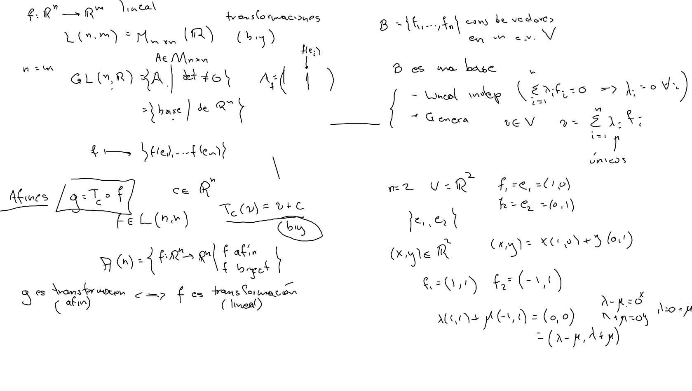
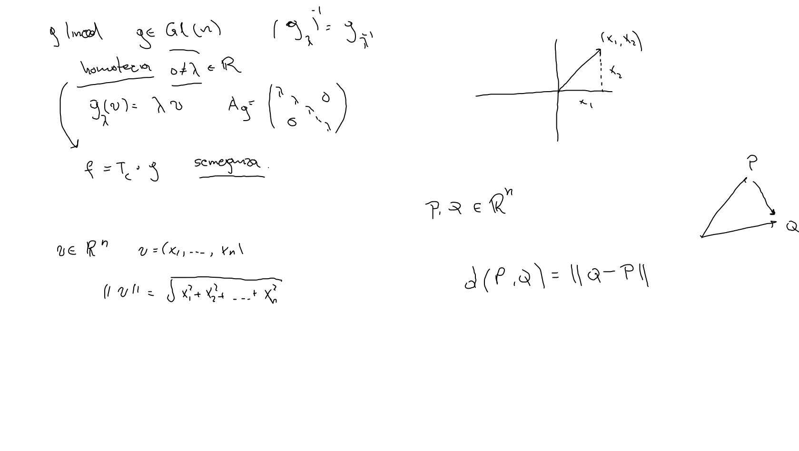
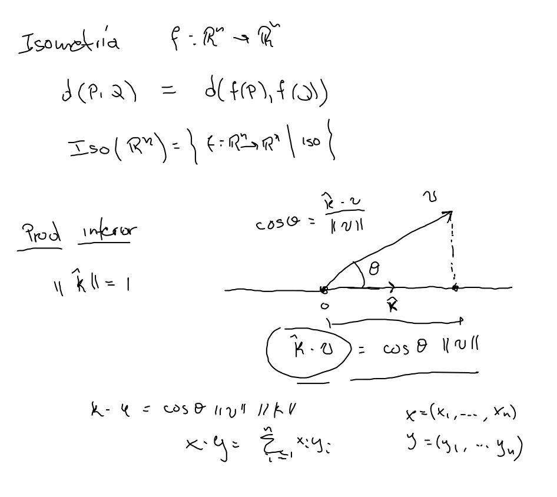
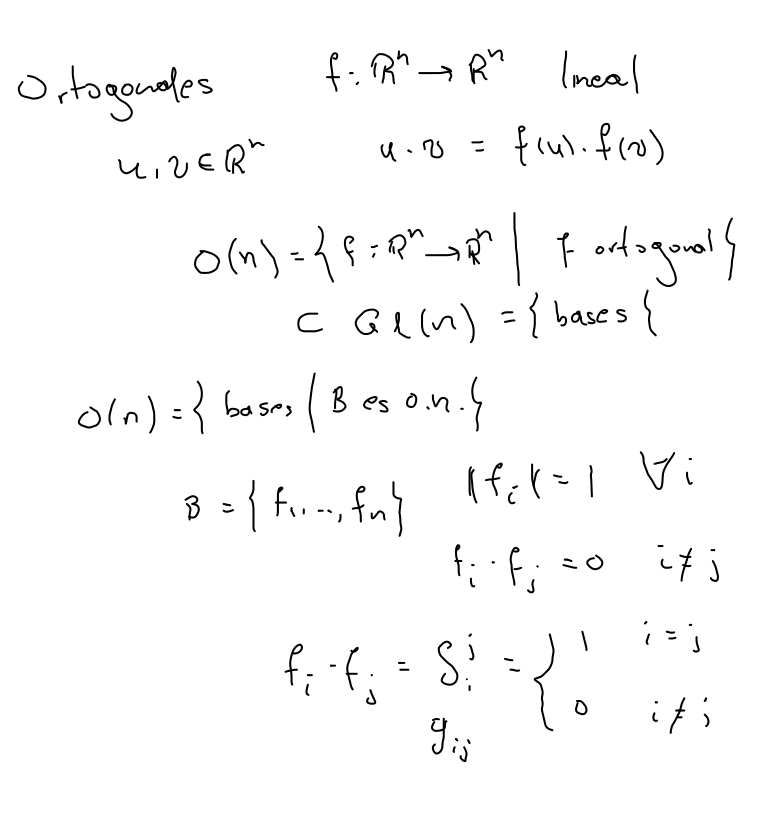

d(P,Q)=∥Q−P∥\text d(P,Q)=\|Q-P\|d(P,Q)=∥Q−P∥ 
d(v,u)=d(f(v),f(u))\text{d}(\mathbf v,\mathbf u)=\text{d}(f(\mathbf v),f(\mathbf u))d(v,u)=d(f(v),f(u))
∥v∥2=v⋅v\|\mathbf v\|^2=\mathbf v\cdot\mathbf v∥v∥2=v⋅v 
v⋅u=f(v)⋅f(u)\mathbf v\cdot\mathbf u=f(\mathbf v)\cdot f(\mathbf u)v⋅u=f(v)⋅f(u)  Proposición Si ggg es isometría y fija al origen entonces es ortogonal.